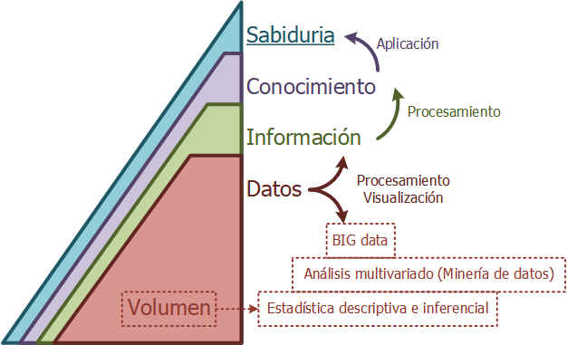

1. Data Collection
Es el proceso de recopilación y medición de los datos correspondientes a variables específicas en un sistema establecido, lo que permite responder a las preguntas relacionadas y evaluar resultados.

2. Visualización de datos
La visualización de datos acelera el proceso de toma de decisiones debido a nuestra capacidad de comprenderlos en forma gráfica, entonces la visualización de datos favorece los procesos de toma de decisiones con mayor posibilidad de acierto.
Mi Primera Grafica
Mi Segunda Grafica